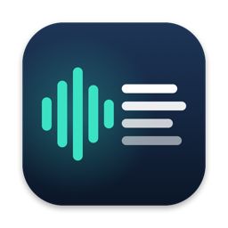

Scribewell
Turn audio and video into text, right on your Mac. Your recordings are never uploaded.
Getting started
Drag an audio or video file onto the Scribewell window or its Dock icon, or choose File → Transcribe Files… (⌘O). Scribewell reads MP3, M4A, WAV, AIFF, FLAC, CAF, MP4, MOV and most other formats macOS can play. The transcript appears in the sidebar with a timestamp on every paragraph.
Pick the language of your recordings at the bottom of the sidebar, or in Settings. It applies to the next files you transcribe.
Working with transcripts
Click a timestamp to hear that moment (while the original file is still open in Scribewell). Click the title to rename a transcript. Use the search field at the top of the sidebar to search every transcript at once; matches are highlighted.
Copy and export
Copy puts the whole transcript on the clipboard. Export saves it as plain text, SubRip subtitles (SRT), WebVTT subtitles (VTT) or Markdown. Every export is free. Turn timestamps in plain text on or off in Settings.
Scribewell Pro
The free version transcribes the first 15 minutes of each file, one file at a time. Scribewell Pro is one purchase, yours to keep, no subscription: files of any length, a batch queue for many files, and subtitle tuning (characters per line, lines per caption, caption length). If you reinstall or use another Mac, choose Restore Purchase in Settings.
Common questions
It says my language can't be transcribed on this Mac.
Choose another language, or add it in System Settings → Keyboard → Dictation so macOS installs it. On macOS 26, macOS may download the speech model for a language the first time you use it.
It asks for Speech Recognition.
On macOS 14 and 15, macOS asks once. If you said no, turn Scribewell on in System Settings → Privacy & Security → Speech Recognition.
Does it work offline?
Yes. Transcription runs on your Mac with Apple's speech recognition.
Contact
For help, bug reports or ideas, open a support request.